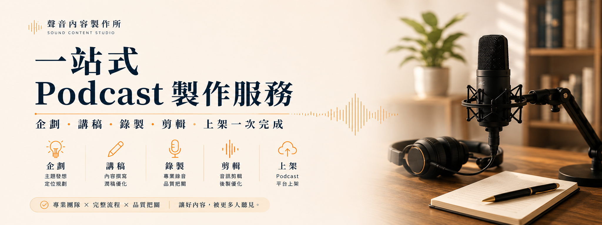
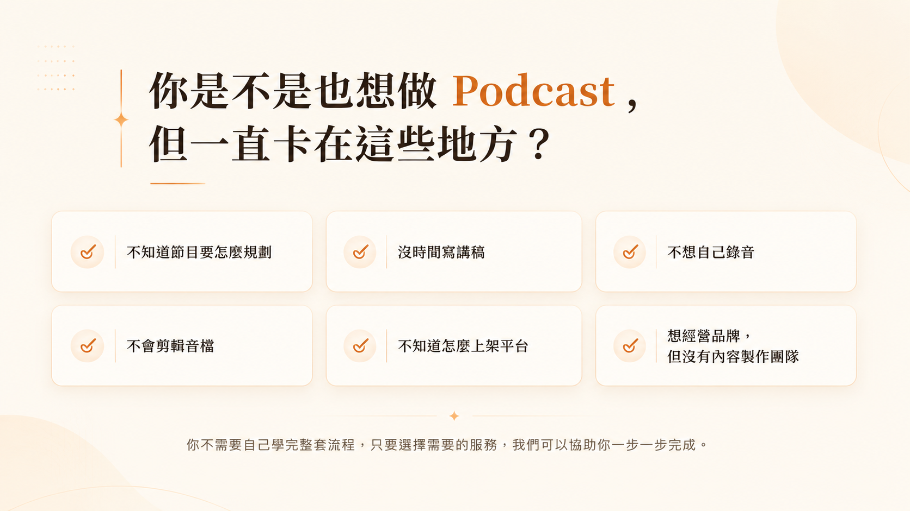
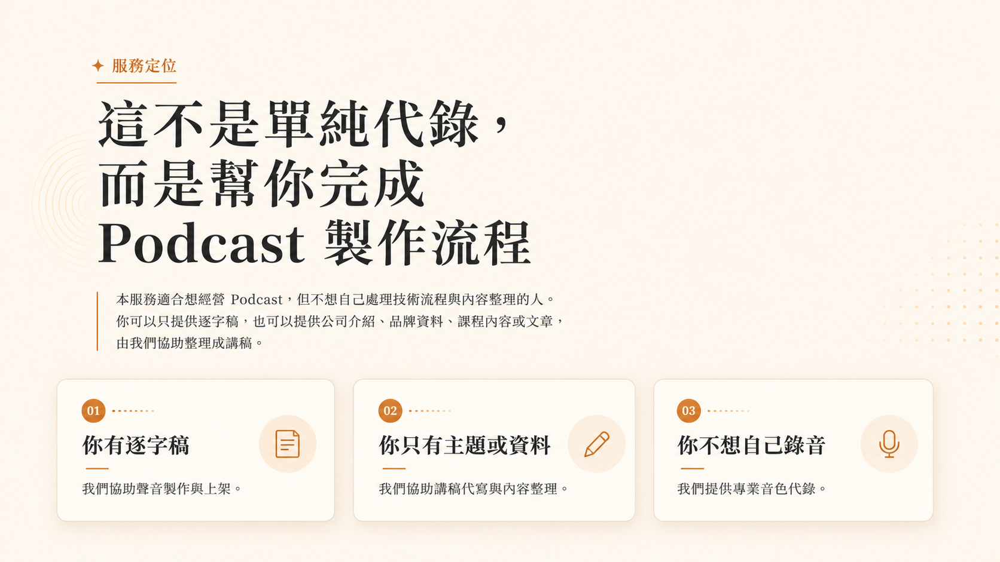

A. 使用自己的聲音
適合想建立個人品牌聲音辨識度的客戶。客戶可自行提供錄音檔，或依照我們提供的錄音建議完成錄製，再由我們進行後製整理。



適合需要穩定內容產出，但不想把時間花在錄音、剪輯與上架細節的專業人士與品牌。
適合想建立個人品牌聲音辨識度的客戶。客戶可自行提供錄音檔，或依照我們提供的錄音建議完成錄製，再由我們進行後製整理。
如果你不想自己錄音，可以選擇專業音色，由我們依照講稿製作成 Podcast 音檔。
客戶提供已完成、可直接錄製的逐字稿，我們依照文字內容製作聲音音檔。
如果你只有主題、公司介紹、品牌資料或重點內容，可以加購講稿代寫，由我們協助整理成適合 Podcast 收聽的口語講稿。
基本包適合已經有逐字稿、內容方向明確，只需要協助製作音檔與上架的客戶。
實際音色依系統可支援項目為準。基本包以單人旁白為主，若需雙人對話、多人對話或情境式節目，須另行加購。
每集 5 分鐘內
原定價 NT$15,800
現在購買 NT$9,800 起
適合第一次嘗試 Podcast 的客戶
包含：專業音色代錄或客戶錄音後製、SoundOn 上架
加入官方 LINE 詢問每集 5 分鐘內
原定價 NT$29,800
現在購買 NT$18,800 起
適合想建立一季 Podcast 內容的客戶
包含：專業音色代錄或客戶錄音後製、SoundOn 上架
加入官方 LINE 詢問每集 5 分鐘內
原定價 NT$56,800
現在購買 NT$35,800 起
適合想長期排程或建立內容庫存的客戶
包含：專業音色代錄或客戶錄音後製、SoundOn 上架
加入官方 LINE 詢問| 5 分鐘內 | 現在購買 基本包包含 |
|---|---|
| 10 分鐘內 | 原定價 NT$1,200／集 現在購買 NT$800／集 |
| 15 分鐘內 | 原定價 NT$2,200／集 現在購買 NT$1,500／集 |
| 20 分鐘內 | 原定價 NT$3,200／集 現在購買 NT$2,200／集 |
| 超過 20 分鐘 | 現在購買 另行報價 |
依照節目集數、長度、聲音形式與品牌需求彈性加購，所有價格都會在 LINE 確認後安排製作。
若基本方案集數不足，可加購單集製作。
原定價 NT$2,800
現在購買 NT$1,980／集
原定價 NT$3,800
現在購買 NT$2,780／集
原定價 NT$4,800
現在購買 NT$3,480／集
原定價 NT$5,800
現在購買 NT$4,180／集
原定價 NT$2,500
現在購買 NT$1,500／集
原定價 NT$4,500
現在購買 NT$2,800／集
原定價 NT$6,500
現在購買 NT$4,000／集
原定價 NT$8,000
現在購買 NT$5,000／集
現在購買 基本包包含
現在購買 基本包包含
原定價 NT$5,000
現在購買 NT$3,000 起
原定價 NT$1,200／集
現在購買 NT$800／集
原定價 NT$2,500／集
現在購買 NT$1,500／集起
原定價 NT$4,000／集
現在購買 NT$2,500／集起
現在購買 NT$1,500／集起，另行報價
原定價 NT$2,500
現在購買 NT$1,500 起
原定價 NT$2,500
現在購買 NT$1,500 起
原定價 NT$4,000
現在購買 NT$2,500 起
原定價 NT$5,000
現在購買 NT$3,000 起
原定價 NT$1,200
現在購買 NT$800／篇
原定價 NT$1,200
現在購買 NT$800／平台／集
原定價 NT$5,000
現在購買 NT$3,000 起
原定價 總價加收 50%
現在購買 總價加收 30%
你可以依需求選擇集數、單集長度、聲音形式、是否講稿代寫、雙人對話、片頭片尾、多平台上架、封面設計或社群貼文，我們會在 LINE 協助你確認方案。
加入官方 LINE 後，我們會依照你的需求確認服務內容、付款方式與資料上傳流程，再開始安排製作。
依照你購買的方案不同，可能需要提供以下資料。
若客戶提供的是逐字稿，須為可直接錄製版本。若內容需重新整理、改寫、潤稿、口語化或補充內容，須加購講稿代寫或文案重寫服務。
基本包不提供音檔修改
客戶提供之逐字稿須為最終版本
若逐字稿有錯字、資料錯誤、名稱錯誤或語句不順，將依原稿製作
若需潤稿、重寫、修正語氣、更換內容或重新製作，須另行加購
音檔完成並上架 SoundOn 後，即視為本集交付完成
平台審核、帳號權限、平台政策變更、平台下架、RSS 串接異常或第三方平台問題，非本服務交付保證範圍
客戶資料提供延遲時，交付時間將順延
講稿代寫服務提供 1 次文字修改
講稿修改範圍以原主題與原方向內之調整為限，若更換主題、重寫架構、增加大量內容或變更集數，須另行報價
可以，但需加購講稿代寫服務。你可以提供公司介紹、品牌資料、服務內容或想傳達的重點，我們協助整理成 Podcast 講稿。
可以。你可以提供自行錄製的聲音檔，我們協助進行基礎音檔整理與上架。
可以。你可以選擇專業音色代錄，例如沉穩男聲、親切女聲、專業女聲等。
基本包不提供音檔修改。若需更換文字、調整音色或重新製作，須另行報價。
基本包包含 SoundOn 上架。若需協助串接或發布至其他 Podcast 平台，如Apple podcast、spotify、KKBOX，可另行加購。
講稿代寫、文案重寫、片頭片尾製作、背景音樂、音檔修改、多平台上架、Podcast 封面設計、社群貼文撰寫、逐字稿整理、雙人或多人對話製作、真人錄音到場服務、指定真人配音員等，皆可依需求另行報價。
可以，客戶可選擇一次上架、每週上架、每兩週上架，或指定日期上架。
平台審核、帳號權限、平台政策或第三方系統問題，非本服務交付保證範圍。
基本包不包含封面設計。客戶需自行提供專輯封面，若需封面設計可另行加購。
可以，但雙人對話或多人對話屬於加購服務。
講稿代寫服務提供 1 次文字修改。修改範圍以原主題與原方向內之調整為限。
你不用從零學錄音、剪輯和上架。只要下單並提供資料，我們協助你把想法、文章、公司介紹或專業知識，變成可以發布的 Podcast。
LINE ID：@169wnclt